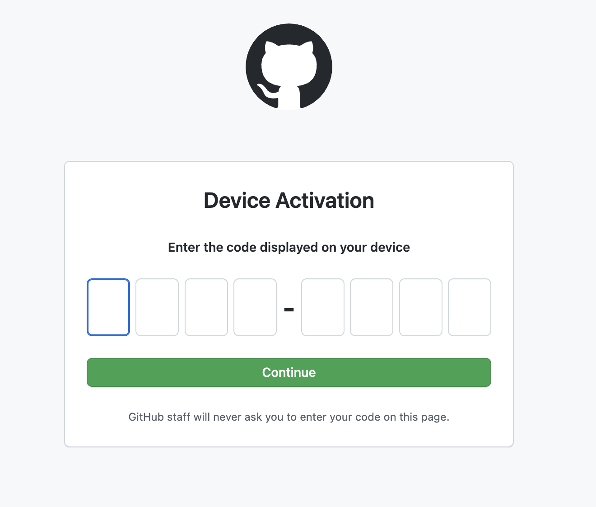
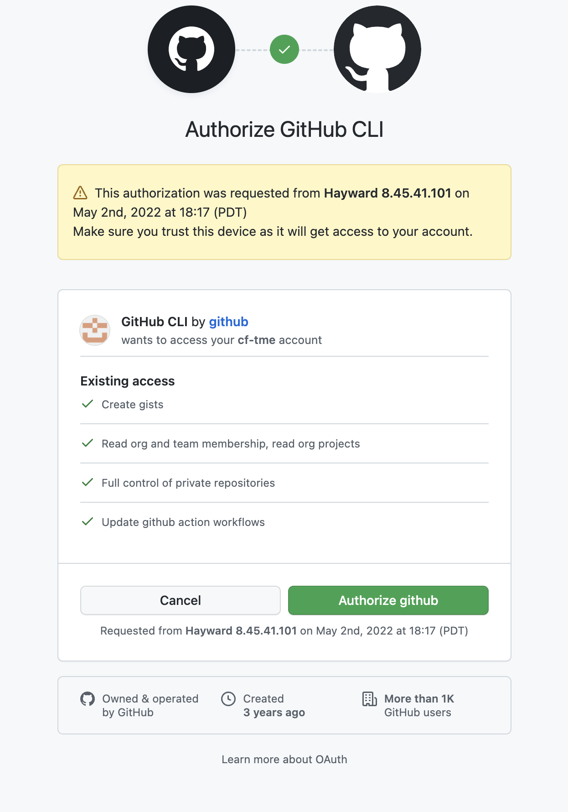
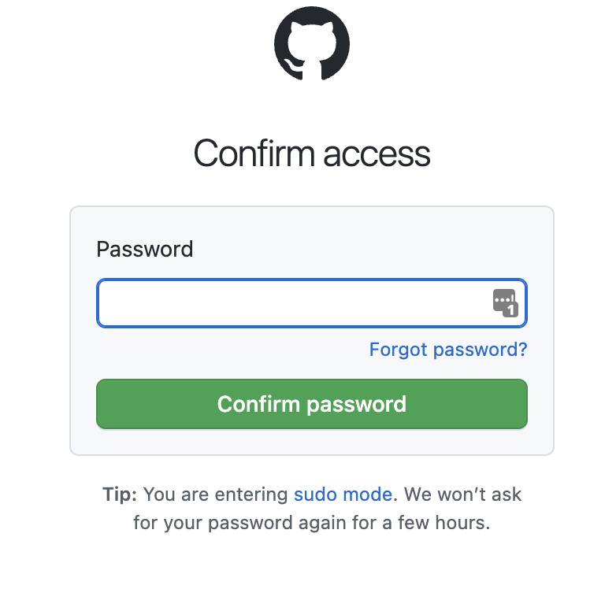
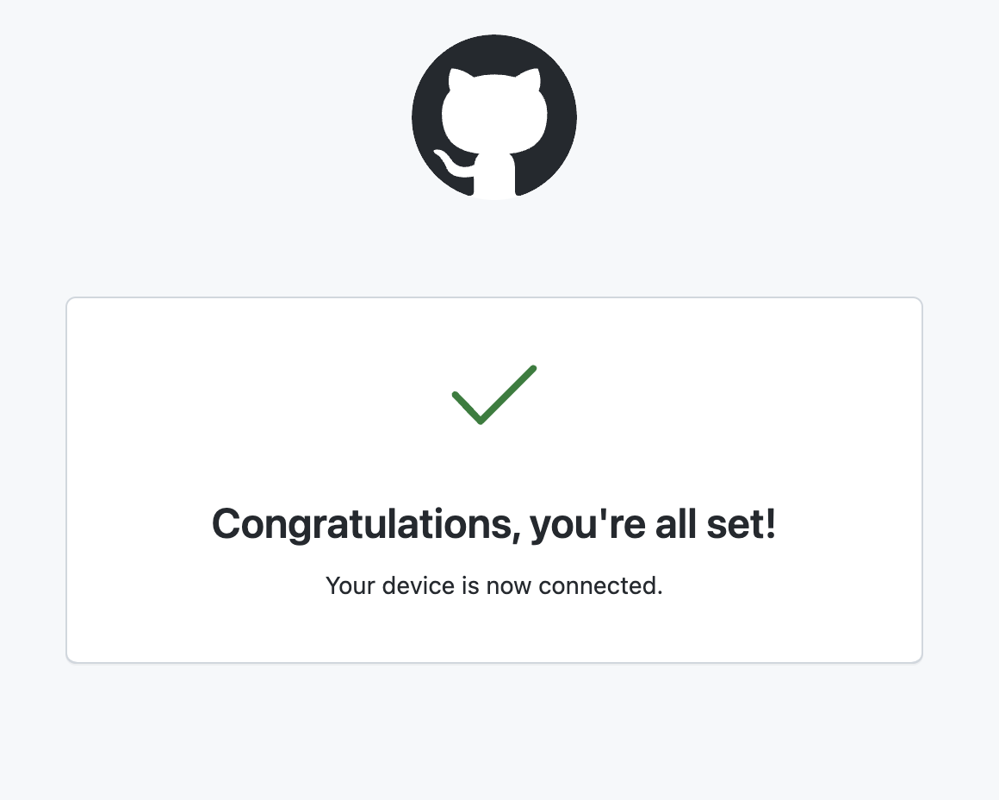

1. Setup Github
1.1. Install Github CLI
GitHub will be used as our code hosting platform - the GitHub CLI will be used to login to our GitHub Account as well as manage repositories
1.1.1. MacOS
Install Homebrew:
The fastest way to install packages onto MacOS is with Homebrew, if you already have Homebrew installed you can skip this step
To install Brew, in a terminal window enter
/bin/bash -c "$(curl -fsSL https://raw.githubusercontent.com/Homebrew/install/HEAD/install.sh)"
Install GitHub CLI:
In a terminal window enter:
brew install gh
1.1.2. Linux
Installation of the GitHub CLI can be done with the built in package managers on most all linux distributions - to cover common use cases the steps below are for Debian and CentOS
Debian, Ubuntu Linux, Raspberry Pi OS (apt)
curl -fsSL https://cli.github.com/packages/githubcli-archive-keyring.gpg | sudo dd of=/usr/share/keyrings/githubcli-archive-keyring.gpg
echo "deb [arch=$(dpkg --print-architecture) signed-by=/usr/share/keyrings/githubcli-archive-keyring.gpg] https://cli.github.com/packages stable main" | sudo tee /etc/apt/sources.list.d/github-cli.list > /dev/null
sudo apt update
sudo apt install gh
Fedora, CentOS, Red Hat Enterprise Linux (dnf)
sudo dnf install 'dnf-command(config-manager)'
sudo dnf config-manager --add-repo https://cli.github.com/packages/rpm/gh-cli.repo
sudo dnf install gh
1.1.3. Windows
Installation of GitHub CLI can be done with powershell winget package manager. Open PowerShell and enter the following installation command:
winget install --id GitHub.cli
If prompted enter Y to approve installation
Once installation is complete you must add GitHub CLI installation to the Windows PATH:
$Env:PATH += ";C:\Program Files\GitHub CLI"
1.2. Login to Github CLI
Once Github CLI is installed you can authenticate to your Github account. In a terminal window enter:
gh auth login
At the follow up prompt select Github.com and press enter
? What account do you want to log into? [Use arrows to move, type to filter]
> GitHub.com
GitHub Enterprise Server
At the next prompt select HTTPS and press enter
? What is your preferred protocol for Git operations? [Use arrows to move, type to filter]
> HTTPS
SSH
Enter Y to authenticate with GitHub credentials
? Authenticate Git with your GitHub credentials? (Y/n)
Select Login with a web browser
? How would you like to authenticate GitHub CLI? [Use arrows to move, type to filter]
> Login with a web browser
Paste an authentication token
Copy the provided one-time code and press Enter to open browser
! First copy your one-time code: XXXX-XXXX
Press Enter to open github.com in your browser...
When the browser opens - enter the one time code into the browser and press Continue

Authorize access on the following page

If prompted enter your password in the following screen and press Confirm Password

If the login is successful you should see a success page

GitHub Setup Complete!
You have successfully setup GitHub CLI! Next step is setting up Setting up Git CLI